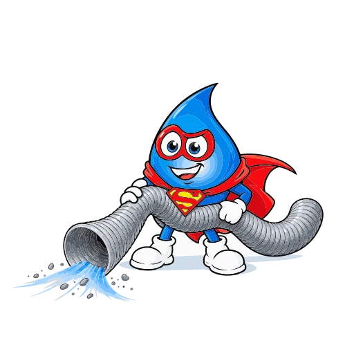

Aspiration et hydrocurage
Aspirateurs, camions de curage et de vidange, pompes et robots haute pression (300 à 3000 bar) pour l’aspiration, le curage, le décapage et l’hydrodémolition.
- Haute pression eau chaude
- Pompe Falch
- Pompe Hammelmann 40 lt/min
- Pompe Hammelmann 200 lt/min
- Robot Conjet 327
- Robot Conjet 557 XL
- Robot Conjet Nalta
- Robot Vertidrive M3
- Tête de démarquage 2000 bar
- Robot filoguidé THP
- Robot haute pression
- Installation UHP robotisée
- Lance à main
- Robot sur chenillard
- Robot aimanté
- Chariot motorisé
- Pompe UHP
- Pompe 2500 bar
- Aspirateur industriel eau avec pompe de refoulement
- Pompe à vide Kaiser Saugboy – 380 V
- Véhicule 3.5 T avec unité complète pour service WC
- 4x4 Defco
- Camion 2 essieux Fuso Canter Baroclean
- Camion 3 essieux Volvo Cappellotto
- Camion 4 essieux Kaiser
- Camion 4 essieux D. Kaiser
- Camion 5 essieux Scania Hercules
- Camion super aspirateur
- Camion nettoyage Molok RSP
- Jetcam